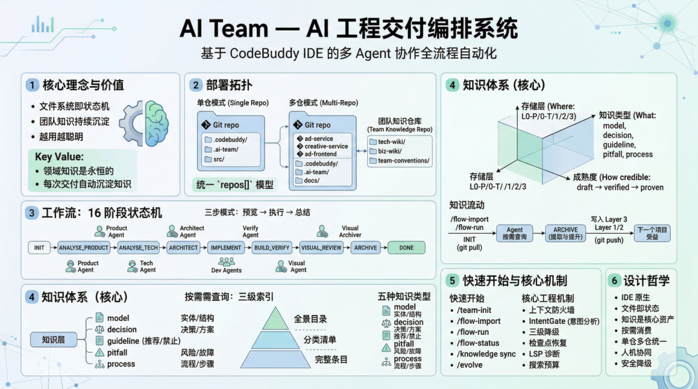
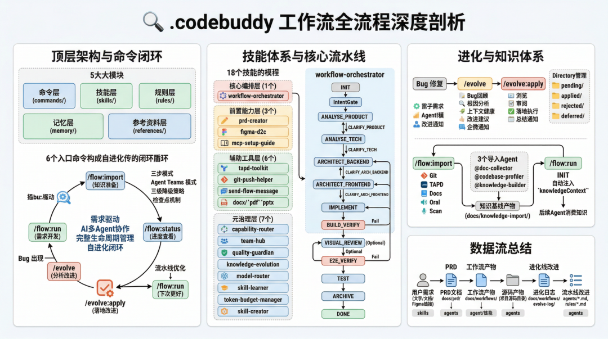

Harness Engineering 的护城河不是工作流，是知识沉淀：腾讯 AI Team 三维知识体系
来源：微信公众号 归档日期：2026-05-11 抓取状态：成功 原文字符：17813｜配图：5 张
摘要速览
大家都在热议 Harness Engineering 的工作流编排，却忽略了更本质的问题：工作流只是管道，没有知识沉淀的工作流是"一次性"的。如何让每次交付都自动积累团队知识，让新项目能"站在前人肩上"？
核心内容
- 核心论点：知识才是护城河，工作流是手段
- 工作流可替换（串行→并行→图结构 DAG），知识可累积（业务系统踩过的坑永远有价值）
- 没有知识闭环的工作流：每次从零开始，上一次踩的坑下次照踩
- 知识是复利资产：散点型→因果型→时空型，越高阶越依赖团队积累，越难从模型获得
- Harness 三支柱中"上下文工程"和"持续治理"本身就是知识管理——知识工程是核心能力，不是附属品
- 三维正交知识体系架构
- 存储层（五层）：Layer 0-P 个人偏好（纯本地）/ Layer 0-T 团队约定（Git共享）/ Layer 1 技术知识（跨项目通用）/ Layer 2 业务知识（按领域）/ Layer 3 项目知识（随项目走）；知识可"向上提升"：L3 通用技术→L1，通用业务→L2
- 知识类型（五种 MECE）：model 实体定义 / decision 架构决策及理由 / guideline 推荐或禁止做法 / pitfall 已知风险故障模式 / process 业务流程状态机
- 成熟度（三级 + 自动衰减）：draft（单一来源）→ verified（1项目验证）→ proven（≥2项目）；proven 12个月未引用降级，verified 6个月降级，draft持续未引用自动归档
- 团队知识库：独立 Git 仓库
- 不寄生于业务项目，是"单一事实来源"
- 结构：team-conventions（团队宪法）+ tech-wiki（L1）+ biz-wiki/{domain}（L2）+ project-profiles + contributions/pending（暂存区）
- 三种角色：maintainer（质量把关）/ contributor（提交知识）/ consumer（查询消费）
- 自动冲突解决策略 + contributions/pending 暂存区
- 知识流动闭环：INIT→消费→ARCHIVE
- INIT 阶段：三级渐进式索引（catalog → 分类列表 → 具体条目）+ 查询预算（控制 context 膨胀）
- 各阶段按需查询：关键词→catalog→分类→具体知识条目，按需注入上下文
- ARCHIVE 阶段：自动提取所有阶段的
knowledgeReferences，批量更新evidence.last_referenced，被引用知识自动提升 maturity，长期未引用自动衰减
- 人机交互瓶颈突破：在场依赖问题
- 实际可操控 Agent 时间不到 4 小时/天（会议/午饭/通勤/晚上内网不通）
- 解法：远程操控（手机/平板接管开发机会话，办公网内直接用）+ 状态持久化（文件系统即状态机，不依赖内存）+ 异步审批（Agent提交产物暂停等待，人任意时间任意设备审批后继续）+ 通知触达（企业微信推送关键节点）
- 不仅提效，更保障知识沉淀闭环完整性：工作流流转越顺，ARCHIVE 阶段越快完成，新知识进入团队库的速度越快
- 知识治理：Lint 机制
- 检查项：索引不一致（自动修复）、孤儿条目（降级）、矛盾检测（标记冲突等待裁决）、过时检测（自动归档）、重复相似（标记合并候选）、成熟度衰减（自动降级）
- 触发方式：每完成10个工作流自动触发 /
/knowledge lint手动触发 / 连续30天未执行时下次流程启动时提醒
可执行启发
（待补充）
我的想法
（待补充）思考方向：
- 自己的知识库目前是"按主题/按日期"的扁平二级结构，能否参考五层存储模型，把"个人经验"和"方法论沉淀"区分为不同层级？
- 知识成熟度（draft→verified→proven）的思路可以直接用在知识卡治理上——长期"我的想法"为"待补充"且从未被检索的卡，是否该归档清理？
为什么有用
直接解答了"知识库怎么维护"这个问题：五层存储划定知识边界和共享范围；五种类型覆盖所有知识形态；三级成熟度 + 自动衰减防止知识库膨胀腐烂。这套体系可以直接对照自己的 Agent 体系（chairman→项目级 Agent→子 Agent 的知识传递路径）来设计知识分层方案。
具体步骤
- 为团队知识建立独立 Git 仓库，按五层目录结构组织
- 所有历史知识导入时初始 maturity 设为 draft，通过实际引用逐步验证提升
- 每个工作流的 ARCHIVE 阶段读取 knowledgeReferences 批量更新引用追踪
- 设置 Lint 触发机制（每10个工作流一次），定期清理孤儿/矛盾/过时知识
- 人机交互节点设计为异步模式：Agent 提交产物后持久化状态，人通过手机/远程审批后工作流继续
适用 / 不适用场景
- 适用：团队级 AI 工程体系建设、需要跨项目知识复用的中长期项目、个人知识管理体系设计（概念对照）
- 不适用：一次性脚本/快速原型（知识沉淀成本高于收益）、单人短期项目（L2/L3 知识提升路径意义不大）
原文：腾讯程序员·stevenpxiao
一、从 Harness Engineering 热潮说起
2025 年末至 2026 年初，AI 工程领域掀起了一场关于 Harness Engineering 的热烈讨论。这个术语源自"harness"（马具）的隐喻——就像骑师通过缰绳和马鞍来引导马的力量走正确的方向，而非增强马本身的体能，Harness Engineering 强调的是引导和约束 AI 模型的能力，而非提升模型本身。
从三大标志性实践来看：
| 实践方 | 核心关注 | 关键动作 |
|---|---|---|
| OpenAI — Codex | 人机交互协议 | 零手写代码，通过精确的指令协议驾驭 Agent |
| Cursor — Self-Driving | 多 Agent 协同 | 背景 Agent 自动检测冲突并运行测试 |
| Anthropic — Claude Code | 长时运行稳定性 | 多层记忆系统 + CLAUDE.md 约束，让 Agent 在复杂任务中保持一致性 |
工作流只是管道，知识才是流过管道的活水。
二、Harness Engineering 本质：三支柱与知识的位置
┌─────────────────────────────────────────────────────┐
│ Harness Engineering 三支柱 │
├─────────────────┬─────────────────┬─────────────────┤
│ 上下文工程 │ 架构约束 │ 持续治理 │
│ Context Eng. │ Architecture │ Governance │
├─────────────────┼─────────────────┼─────────────────┤
│ · 长/短期记忆 │ · Agent 编排模式 │ · 质量门禁 │
│ · 知识检索注入 │ · 状态机设计 │ · 知识生命周期 │
│ · 渐进式披露 │ · 降级策略 │ · 自动衰减 │
│ · 上下文防火墙 │ · 安全边界 │ · 持续进化 │
└─────────────────┴─────────────────┴─────────────────┘三、核心论点：为什么知识沉淀比工作流更重要
3.1 工作流是"可替换的"，知识是"可累积的"
今天用 16 阶段状态机，明天可能用图结构 DAG。但"广告预算扣减在高并发下会超扣，需用 Redis+Lua 保证原子性"——这条知识不管工作流怎么变，都是有价值的。
3.2 没有知识沉淀的工作流是"一次性"的
团队搭了很复杂的 Agent 工作流，每次都从零开始——上一次踩过的坑，下一次照踩不误。这就是没有知识闭环的工作流。
3.3 知识是团队的"复利资产"
知识分三类：散点型（孤立事实）、因果型（A 导致 B 的推理链）、时空型（特定场景才成立的经验）。越高阶的知识，越难从模型获得，越依赖团队实践积累。
四、知识分层架构：五层存储 × 五种类型 × 三级成熟度
4.2 五层存储架构
┌──────────────────────────────────────────────────────────────┐
│ 五层知识存储 │
├──────────┬──────────────────────────────┬────────────────────┤
│ Layer 0-P │ 个人偏好 (~/.ai-team/) │ 纯本地，不共享 │
│ Layer 0-T │ 团队约定 (team-conventions/) │ 团队级，Git 共享 │
│ Layer 1 │ 技术知识 (tech-wiki/) │ 团队级，跨项目 │
│ Layer 2 │ 业务知识 (biz-wiki/{domain}/)│ 团队级，按领域 │
│ Layer 3 │ 项目知识 (docs/knowledge/) │ 项目级，随项目走 │
└──────────┴──────────────────────────────┴────────────────────┘知识提升决策树：
Layer 3 (项目内)
├──→ Q1: 是否项目特有？ → 是：留在 Layer 3
├──→ Q2: 是否通用技术？ → 是：提升到 Layer 1
└──→ Q3: 是否通用业务？ → 是：提升到 Layer 24.3 五种知识类型（MECE）
| 类型 | 定义 | 示例 |
|---|---|---|
| model | 实体定义、数据结构、关系图 | "广告计划包含预算/出价/投放时段三个核心字段" |
| decision | 技术选型、架构决策及理由 | "选择事件驱动而非 RPC，因为广告状态变更需要解耦" |
| guideline | 推荐/禁止做法 | "公共模块变更后的兼容性检查清单" |
| pitfall | 已知风险、故障模式、排查步骤 | "广告预算扣减在高并发下会超扣" |
| process | 业务流程、状态机、操作步骤 | "广告审核：提交→机审→人审→上线" |
4.4 三级成熟度 + 自动衰减
draft → verified（1项目验证）→ proven（≥2项目）| 触发条件 | 衰减动作 |
|---|---|
| proven 条目 12 个月未被引用 | 降级为 verified |
| verified 条目 6 个月未被引用 | 降级为 draft |
| draft 条目持续未引用 + Lint 标记 | 归档，移出活跃索引 |
五、团队知识库：独立 Git 仓库
team-knowledge.git
├── knowledge-catalog.md ← 全景目录（Agent 查询入口）
├── team-conventions/ ← Layer 0-T: 团队约定
├── tech-wiki/ ← Layer 1: 技术知识
├── biz-wiki/{domain}/ ← Layer 2: 业务知识
├── project-profiles/ ← 项目画像
└── contributions/pending/ ← 贡献暂存区为什么独立仓库？
- 知识的生命周期独立于具体项目（项目可以归档，知识不能丢）
- 多项目共享同一知识仓库，知识被跨项目验证才能晋升 proven
- Git 天然提供版本历史、PR 审查、权限控制
三种角色：
- maintainer：知识质量把关，处理冲突裁决，审核 contribution PR
- contributor：提交新知识或更新，通过 contributions/pending 暂存
- consumer：查询消费，使用引用追踪触发成熟度更新
六、知识流动路径
INIT（知识注入）→ 各阶段执行（知识消费）→ ARCHIVE（知识提取）INIT 阶段——三级渐进式索引：
- L1：
knowledge-catalog.md（全景，100 行内） - L2：各分类的 catalog.md（精选，50 行内）
- L3：具体知识条目（按需读取）
查询预算：每次工作流预设上下文 Token 预算（如 8K），超限时优先 proven > verified > draft，按知识与当前任务的相关度排序。
ARCHIVE 阶段——引用追踪闭环：读取所有阶段产物中的 knowledgeReferences，批量更新 evidence.last_referenced 字段。被引用的知识 maturity 自动提升，长期未引用自动衰减。
七、突破人机交互瓶颈
┌─────────────────────────────────────────────────┐
│ 一个典型的工作日 │
├─────────┬──────────────┬────────────────────────┤
│ 09:00 │ 站会 │ 无法响应 Agent │
│ 10:00 │ 坐在工位 │ 可以操作 │
│ 11:30 │ 技术评审会 │ 无法响应 Agent │
│ 12:00 │ 午饭+午休 │ 无法响应 Agent │
│ 14:00 │ 坐在工位 │ 可以操作 │
│ 15:30 │ 跨团队沟通 │ 无法响应 Agent │
│ 17:00 │ 通勤回家 │ 无法响应 Agent │
│ 20:00 │ 在家想处理 │ 内网环境不可达 │
└─────────┴──────────────┴────────────────────────┘解法——四项架构设计：
- 状态持久化：文件系统即状态机，所有状态持久化在文件，任意设备接入都看到一致状态
- 断点恢复：每个阶段入口/出口有明确持久化产物，支持从任意断点恢复
- 异步审批：人工确认节点设计为异步——Agent 提交产物暂停等待，人在任意时间任意设备审批后继续
- 通知触达：关键节点（架构评审、产物验收）通过企业微信主动推送，而非等人来检查
八、落地经验
历史项目冷启动：多源收集（Git扫描/TAPD/iWiki/本地文档/口述）+ 所有导入知识初始 maturity 为 draft + 导入进度持久化支持断点续跑
知识膨胀治理（Lint）：
| 检查项 | 处理方式 |
|---|---|
| 索引不一致 | 自动修复 |
| 孤儿条目（无引用、无验证） | 降级为 draft |
| 矛盾检测（同主题相反结论） | 标记冲突，等待 maintainer 裁决 |
| 过时检测（6月未引用的 draft） | 自动归档 |
| 重复/相似条目 | 标记合并候选 |
| 成熟度衰减 | 按规则自动降级 |
Big Model vs Big Harness 立场：不是非此即彼，知识工程投入是确定性回报（每沉淀一条 proven 知识，所有后续工作流受益），模型能力提升是概率性回报（不知道下一代在你的场景是否真的更好）。
九、总结
Skill、Agent、工具链会随模型迭代更新，但领域知识是永恒的。AI Team 的每次交付都自动沉淀知识到团队共享仓库，所有成员共建共享，新工作流启动时自动站在前人肩上。
相关卡：
- Harness Engineering 驾驭工程第三范式（阿里云·三范式演进+四个工程案例）
- 腾讯 LEGO 百万行 C++ 实战（腾讯技术工程·工程约束五层架构+对抗式CR）
原文沉淀
目录
- 一、从 Harness Engineering 热潮说起
- 二、Harness Engineering 本质：三支柱与知识的位置
- 三、核心论点：为什么知识沉淀比工作流更重要
- 3.1 工作流是"可替换的"，知识是"可累积的"
- 3.2 没有知识沉淀的工作流是"一次性"的
- 3.3 知识是团队的"复利资产"
- 四、知识分层架构：五层存储 × 五种类型 × 三级成熟度
- 4.1 知识体系的三个维度
- 4.2 五层存储架构
- 4.3 五种知识类型
- 4.4 三级成熟度 + 自动衰减
- 五、团队知识库：如何共享和更新
- 5.1 独立 Git 仓库 —— 知识的"单一事实来源"
- 为什么要独立仓库？
- 5.2 三种团队角色
- 5.3 贡献模式 —— "贡献暂存 + 异步合并"
- 5.4 冲突解决策略
- 六、工作流如何服务于知识沉淀
- 6.1 知识的完整生命周期：三通道沉淀
- 6.2 各阶段查询什么知识
- 6.3 冷启动导入 —— /flow-import
- 七、知识的按需消费：三级索引 + 查询预算
- 7.1 从"推送"到"主动查询"的范式转变
- 7.2 三级渐进式索引
- 7.3 知识引用追踪闭环
- 八、突破人机交互瓶颈：随时随地保障工作流流转
- 8.1 问题：Harness 工作流的"在场依赖"
- 8.2 解法：远程操控 + 跨设备接管
- 8.3 与知识沉淀闭环的结合
- 8.4 工程架构设计启示
- 九、落地经验与思考
- 9.1 历史项目引入：从 0 到 1 的冷启动挑战
- 9.2 知识膨胀治理：Lint 机制
- 9.3 Big Model vs Big Harness —— 我们的务实立场
- 9.4 从"文件即状态"到"知识即资产"
- 十、总结与展望
- 参考文献：

作者：stevenpxiao
当 Harness Engineering 成为 2026 年最热门的 AI 工程话题，业界争论焦点集中在"该用多大的模型"还是"该搭多复杂的工作流"时，我们团队在落地实践中发现了一个被低估的事实——构建 Harness 工作流不是最终目的，私域和团队知识的沉淀才是真正的技术护城河。本文分享我们在 AI Team 工程交付编排系统中，如何设计知识分层架构、如何让团队知识库共建共享、如何让工作流成为知识沉淀的载体、如何突破人机交互瓶颈实现随时随地的工作流流转，以及我们的落地经验和思考。
一、从 Harness Engineering 热潮说起
2025 年末至 2026 年初，AI 工程领域掀起了一场关于 Harness Engineering 的热烈讨论。这个术语源自"harness"（马具）的隐喻——就像骑师通过缰绳和马鞍来引导马的力量走正确的方向，而非增强马本身的体能，Harness Engineering 强调的是引导和约束 AI 模型的能力，而非提升模型本身。
从三大标志性实践来看，不同团队对 Harness Engineering 的侧重各有不同：
| 实践方 | 核心关注 | 关键动作 |
|---|---|---|
| OpenAI — Codex | 人机交互协议 | 零手写代码，通过精确的指令协议驾驭 Agent |
| Cursor — Self-Driving | 多 Agent 协同 | 背景 Agent 自动检测冲突并运行测试 |
| Anthropic — Claude Code | 长时运行稳定性 | 多层记忆系统 + CLAUDE.md 约束，让 Agent 在复杂任务中保持一致性 |
这些实践无疑令人兴奋。但在我们团队深度实践的过程中，我们逐渐意识到一个更本质的问题——
工作流只是管道，知识才是流过管道的活水。
正如 Harness 圆桌讨论中的一个核心论断所指出的：
"将来的技术护城河不在模型，而在垂直领域知识的沉淀。"
模型会迭代，工具链会更新，工作流会重构。但你的团队在一个特定业务领域积累的领域模型、架构决策、最佳实践、已知陷阱、业务流程——这些知识是永恒的，是不会因为模型换代而失效的。
这就是我们在 AI Team 项目中坚持的核心理念：
Skill、Agent、工具链会随模型迭代更新，但领域知识是永恒的。
二、Harness Engineering 本质：三支柱与知识的位置
在深入我们的实践之前，先简要回顾 Harness Engineering 的理论框架。Harness 的核心要素可以归结为三个支柱：
┌─────────────────────────────────────────────────────┐
│ Harness Engineering 三支柱 │
├─────────────────┬─────────────────┬─────────────────┤
│ 上下文工程 │ 架构约束 │ 持续治理 │
│ Context Eng. │ Architecture │ Governance │
├─────────────────┼─────────────────┼─────────────────┤
│ · 长/短期记忆 │ · Agent 编排模式 │ · 质量门禁 │
│ · 知识检索注入 │ · 状态机设计 │ · 知识生命周期 │
│ · 渐进式披露 │ · 降级策略 │ · 自动衰减 │
│ · 上下文防火墙 │ · 安全边界 │ · 持续进化 │
└─────────────────┴─────────────────┴─────────────────┘注意看"上下文工程"这个支柱——知识检索注入和长/短期记忆赫然在列。再看"持续治理"——知识生命周期和自动衰减也是核心组成部分。
换句话说，知识管理本身就是 Harness Engineering 的核心能力，而不是附属品。只是在当前的热潮中，大家更多关注了"工作流怎么编排""Agent 怎么协同"这些更显眼的工程话题，而忽略了底层的知识基础设施。
这就好比大家都在讨论高速公路该修几车道、立交桥该怎么设计，却忘了问：路上跑的车（知识）从哪来？到哪去？怎么维护？
** **
三、核心论点：为什么知识沉淀比工作流更重要
我们在实践中总结出三个关键认知：
3.1 工作流是"可替换的"，知识是"可累积的"
今天用 16 阶段状态机编排工作流，明天可能用图结构 DAG 编排。Agent 的调度模式从串行到并行到分层级联，变化很快。甚至于各大SOTA模型厂商也会逐渐内化和强化这种规划能力。但团队积累的知识——"广告预算扣减在高并发下会超扣，需用 Redis+Lua 保证原子性"——这条知识不管工作流怎么变，都是有价值的。
像Anthropic的claude code本身就是一个极其纯粹的harness实现，他们在4月份发的# Emotion concepts and their function in a large language model论文就有类似的指向，可能未来的Mythos模型会通过探针系统 SAE 来实现模型的“情绪”稳定，进而从根本去实现harness希望解决的模型认知节省的问题。
3.2 没有知识沉淀的工作流是"一次性"的
我们观察到一个反模式：团队搭了很复杂的 Agent 工作流，每次需求都跑一遍全流程，但每次都是从零开始。上一次踩过的坑，下一次照踩不误。上一次做过的架构决策，下一次重新推导一遍。
这就是没有知识闭环的工作流——投入了工程成本搭建工具链，却没有让工具链变得越来越聪明。
3.3 知识是团队的"复利资产"
知识分为三类：散点型知识（孤立的事实）、因果型知识（A 导致 B 的推理链）、时空型知识（特定场景和时间窗口下才成立的经验）。越是高阶的知识，越难以从模型中获得，越依赖团队的实践积累。
当你的知识库有成百上千条 proven（经过多项目验证）的知识条目时，新来的成员、新启动的项目，都能"站在前人肩上"。这就是知识的复利效应。

四、知识分层架构：五层存储 × 五种类型 × 三级成熟度
在 AI Team 系统中，我们设计了一套三维正交的知识体系架构。
4.1 知识体系的三个维度
| 维度 | 回答的问题 | 定义 |
|---|---|---|
| 存储层（在哪） | 知识存在哪里？ | Layer 0-P 0-T 1 2 3 — 从个人到团队到项目 |
| 知识类型（是什么） | 知识描述的是什么？ | model decision guideline pitfall process |
| 成熟度（多可信） | 知识经过多少验证？ | draft → verified → proven |
4.2 五层存储架构
┌──────────────────────────────────────────────────────────────┐
│ 五层知识存储 │
├──────────┬──────────────────────────────┬────────────────────┤
│ Layer 0-P │ 个人偏好 (~/.ai-team/) │ 纯本地，不共享 │
│ Layer 0-T │ 团队约定 (team-conventions/) │ 团队级，Git 共享 │
│ Layer 1 │ 技术知识 (tech-wiki/) │ 团队级，跨项目 │
│ Layer 2 │ 业务知识 (biz-wiki/{domain}/)│ 团队级，按领域 │
│ Layer 3 │ 项目知识 (docs/knowledge/) │ 项目级，随项目走 │
└──────────┴──────────────────────────────┴────────────────────┘为什么要分五层？ 因为不同范围的知识有不同的共享边界和生命周期。
- Layer 0-P（个人偏好）：你喜欢 4 空格缩进还是 2 空格？偏好函数式还是面向对象？这是纯个人的，不应该强制给团队。
- Layer 0-T（团队约定）：代码规范、Commit 规范、Review 标准。这是团队层面的"宪法"，相对稳定。
- Layer 1（技术知识）：跨项目通用的技术经验。比如"Spring Boot 多租户拦截器设计模式"、"Optional 依赖传递陷阱"。
- Layer 2（业务知识）：特定业务领域的领域模型、业务规则、业务流程。比如"广告审核流程：提交→机审→人审→上线"。
- Layer 3（项目知识）：仅在当前项目有意义的上下文。比如"本项目数据库用的是 TencentDB for MySQL 8.0"。
关键设计：知识可以"向上提升"。 Layer 3 的项目知识，如果被判定为跨项目通用，会自动提升到 Layer 1 或 Layer 2。
Layer 3 (项目内)
│ 所有类型，maturity 为 draft
│
├──→ Q1: 是否项目特有？ → 是：留在 Layer 3
├──→ Q2: 是否通用技术？ → 是：提升到 Layer 1 (tech-wiki)
└──→ Q3: 是否通用业务？ → 是：提升到 Layer 2 (biz-wiki)4.3 五种知识类型
知识按"描述的是什么"分类，遵循 MECE（互斥且完全穷尽）原则：
| 类型 | 定义 | 示例 |
|---|---|---|
| model | 实体定义、数据结构、关系图 | "广告计划包含预算/出价/投放时段三个核心字段" |
| decision | 技术选型、架构决策及理由 | "选择事件驱动而非 RPC 同步，因为广告状态变更需要解耦" |
| guideline | 推荐做法 (recommend) 或禁止做法 (avoid) | recommend: "公共模块变更后的兼容性检查清单" |
| pitfall | 已知风险、故障模式、排查步骤 | "广告预算扣减在高并发下会超扣" |
| process | 业务流程、状态机、操作步骤 | "广告审核：提交→机审→人审→上线" |
这五种类型覆盖了我们在实践中遇到的所有知识形态。每一条知识只属于一个类型，来源信息记录在元数据中用于溯源分析。
4.4 三级成熟度 + 自动衰减
知识不是"写完就完了"。它有生命周期。
draft（新提取，单一来源）
↓ 在 1 个工作流中被成功引用
verified（单项目验证）
↓ 在 ≥2 个不同项目中被验证
proven（成熟/可信赖）更关键的是自动衰减机制——知识如果长期不被引用，会自动降级：
| 触发条件 | 衰减动作 |
|---|---|
| proven 条目 12 个月未被引用 | 降级为 verified |
| verified 条目 6 个月未被引用 | 降级为 draft |
| draft 条目持续未引用 + Lint 标记 | 归档，移出活跃索引 |
为什么需要衰减？ 因为知识也会过时。一条三年前的"最佳实践"，可能因为框架版本升级已经不再适用。与其让过时知识误导 Agent，不如让它自然衰减退出活跃库。
这个设计借鉴了 Karpathy 在 LLM Wiki 概念中提出的 Lint 操作——定期识别矛盾、孤儿页、缺失交叉引用和数据缺口。
五、团队知识库：如何共享和更新
5.1 独立 Git 仓库 —— 知识的"单一事实来源"
我们做了一个关键的架构决策：团队知识库是一个独立的 Git 仓库，不寄生于任何业务项目。
team-knowledge.git ← 独立 Git 仓库
├── knowledge-catalog.md ← 全景目录（Agent 查询入口）
├── .knowledge-config.yaml ← 团队配置（成员、冲突策略）
├── team-conventions/ ← Layer 0-T: 团队约定
│ ├── coding-standards.md
│ └── commit-conventions.md
├── tech-wiki/ ← Layer 1: 技术知识
│ ├── catalog.md ← 分类清单
│ ├── patterns/TK-PAT-001.md
│ └── anti-patterns/TK-AP-001.md
├── biz-wiki/ ← Layer 2: 业务知识
│ └── {domain}/
│ ├── catalog.md
│ ├── entities/BK-AD-E001.md
│ └── pitfalls/BK-AD-P001.md
├── project-profiles/ ← 项目画像
└── contributions/ ← 贡献暂存区
├── pending/
└── conflicts/为什么要独立仓库？
- 跨项目共享：同一个团队的多个项目连接同一个知识仓库，项目 A 沉淀的知识，项目 B 自动受益。
- 生命周期独立：业务项目可能归档或重构，但知识不应该跟着项目消失。
- 权限独立：知识库的贡献和消费权限可以独立于代码仓库管理。
5.2 三种团队角色
| 角色 | 权限 | 适用人群 |
|---|---|---|
| maintainer | 裁决内容冲突、审批 proven 提升、管理成员 | 团队负责人、资深工程师 |
| contributor | 通过工作流自动贡献（创建/验证/标记矛盾） | 正式团队成员 |
| reader | 只消费知识（查询/注入），不贡献 | 新成员试用期 |
5.3 贡献模式 —— "贡献暂存 + 异步合并"
我们借鉴了区块链的三个核心思想，但用 Git 作为实现载体：
| 区块链思想 | AI Team 实现 | 机制 |
|---|---|---|
| 不可篡改的追加日志 | log.md 只追加不修改 | 每条变更记录贡献者、时间、会话哈希 |
| 贡献可溯源 | evidence.contributors[] | 类似 Git blame，粒度为知识条目级 |
| 共识机制 | maturity 多人验证提升 | draft→verified: 1 人验证; verified→proven: ≥2 人 + ≥2 项目 |
log.md 示例：
## [2026-04-09] ingest | [Steven] | 门店履约视图归档 | +1 decision, +2 guideline | #a3f8c2
- 新增 DEC-005: 地图组件选型（腾讯地图 GL JS SDK）
- 新增 GL-012: fitBounds 在 flexbox 布局中的替代方案 (polarity=recommend)
## [2026-04-12] verify | [Alice] | 跨项目验证 | maturity↑ 2 | #c5f0e2
- TK-SB-003 "分页查询延迟关联优化" (verified→proven, 2 projects)5.4 冲突解决策略
当多名成员同时向知识库贡献时，按以下策略自动处理：
| 冲突类型 | 处理方式 |
|---|---|
| 纯新增 （不同条目） | 自动合并，两条都保留 |
| 证据追加 （同条目验证） | 自动合并，evidence 数组合并去重 |
| 成熟度提升 | 自动合并 |
| 内容矛盾 | 写入 contributions/conflicts/，通知 maintainer 裁决 |
| 成熟度冲突 （一升一降） | 保留较低成熟度 + 标记 contradiction |
设计理念：大多数情况（纯新增、证据追加、成熟度提升）可以自动处理，只有真正的内容矛盾才需要人工介入。这让知识的共建过程尽可能低摩擦。
六、工作流如何服务于知识沉淀
现在回到工作流。在 AI Team 系统中，我们的 16 阶段状态机不是为了"好看"或"复杂"——它的每一个阶段都与知识的流动紧密关联。
6.1 知识的完整生命周期：三通道沉淀
/flow-import（一次性冷启动） /flow-run（每次需求）
│ │
▼ ▼
冷启动导入 INIT: git pull 知识仓库
3 Agent 管道 │ + 注入查询入口
→ 知识写入团队仓库 │
│ ← Agent 在各阶段按需查询
│ （三级渐进式索引）
▼
ARCHIVE: 知识提取 + 提升判定
│
├→ Layer 3: docs/knowledge-base/
├→ Layer 1: tech-wiki/ ← git push
└→ Layer 2: biz-wiki/ ← git push
│
▼
下一个人的 /flow-run 自动受益三个关键时刻：
- INIT 阶段（知识注入）：工作流启动时，自动
git pull团队知识仓库，将知识全景目录注入 Agent 的查询入口。新启动的工作流自动站在前人肩上。
- 各阶段执行中（知识消费）：Agent 在决策点按需查询知识库。比如
@tech-explorer在技术分析阶段查询"有没有类似的架构决策"，@backend-architect在架构设计阶段查询"有没有已知的反模式"。
- ARCHIVE 阶段（知识提取）：工作流完成后，
@archiver自动从全流程产物中提取知识条目——架构决策变成decision，踩过的坑变成pitfall，总结的经验变成guideline。提取后执行提升判定，符合条件的自动提升到 Layer 1 或 Layer 2。
6.2 各阶段查询什么知识
每个阶段的 Agent 有独立的查询预算，聚焦不同类型的知识：
| 阶段 | 查询焦点 | 重点知识类型 |
|---|---|---|
| ANALYSE_PRODUCT | 业务知识 (Layer 2) + 历史需求 | model, process, pitfall |
| ANALYSE_TECH | 技术知识 (Layer 1) + 归档索引 | decision, guideline(avoid), pitfall |
| ARCHITECT | 架构模式 + 实体关系 | decision, model |
| IMPLEMENT | 编码实践 + 团队约定 | guideline, pitfall |
| BUILD_VERIFY | 反模式库 | pitfall, guideline(avoid) |
为什么要限制查询预算？ 因为 Agent 如果无限制地读取知识库，会导致上下文膨胀——这恰恰是 Harness Engineering 要解决的核心问题之一。我们通过预算控制，让知识消费"精准"而非"贪婪"。
6.3 冷启动导入 —— /flow-import
对于历史项目（已有大量代码但没有知识库），我们提供了 /flow-import 命令，通过 3 个 Agent 的管道实现冷启动：
@doc-collector → 多源资料收集
│ （Git/TAPD/iwiki/本地文档/口述）
↓
@codebase-profiler → 代码画像
│ （技术栈/模块/依赖/模式，60 次搜索预算）
↓
@knowledge-builder → 知识标准化
（4 维基线 + ≤13 条知识条目 + 归档总结）所有产出条目初始 maturity 为 draft，后续工作流的执行会逐步验证和提升它们。
七、知识的按需消费：三级索引 + 查询预算
7.1 从"推送"到"主动查询"的范式转变
传统做法是在 Agent 启动时，把一堆知识"推送"给它。这有两个问题：
- 信息过载：推送太多知识，Agent 反而被淹没，找不到关键信息。
- 不精准：预先推送的知识不一定是 Agent 当前决策点需要的。
我们的设计理念是：Agent 不被动接收固定数量的知识推荐，而是通过三级渐进式索引主动按需查阅。
7.2 三级渐进式索引
借鉴 Karpathy 的 LLM Wiki Pattern，我们设计了三层索引结构：
| 层级 | 文件 | 大小 | 作用 |
|---|---|---|---|
| Layer A: 全景目录 | knowledge-catalog.md | ~50 行 | "知识库有什么？"——分类统计 + 按阶段推荐查阅路径 |
| Layer B: 分类清单 | 各目录下的 catalog.md | ~100-300 行 | "这个分类有哪些条目？"——每条一行摘要（ID + 标题 + 成熟度 + 标签） |
| Layer C: 完整条目 | TK-*.md / BK-*.md | ~50-200 行 | "这条知识说了什么？"——完整内容 + 背景 + 适用场景 |
渐进查询流程：
Step 1: 读全景目录（~50 行，零成本）
→ 了解知识库有什么分类、每类多少条
→ 定位当前阶段推荐查阅的 catalog.md 路径
Step 2: 读分类清单（~100-300 行，低成本）
→ 每条知识一行摘要
→ 按 tags / applicable_phases 过滤相关条目
Step 3: 读完整条目（按需，每条 50-200 行）
→ 获取完整知识内容
Step 4: 读原始产物（深入，可选）
→ 沿 source_references 追溯原始推导过程这意味着 Agent 可以用 ~50 行的成本 了解知识库全貌，用 ~300 行的成本 定位到相关条目，只在真正需要时才读取完整内容。对比"一次性推送 50 条完整知识"（可能 5000-10000 行），上下文效率提升了一个数量级。
7.3 知识引用追踪闭环
Agent 查询知识后，在输出产物中记录引用：
{
"knowledgeReferences": [
{ "id": "TK-SB-003", "title": "分页查询延迟关联优化", "usedIn": "复用评级 Step 2" },
{ "id": "BK-AD-G004", "title": "广告预算扣减并发控制规则", "usedIn": "业务规则参考" }
]
}ARCHIVE 阶段会读取所有阶段产物中的 knowledgeReferences，批量更新 evidence.last_referenced 字段。这形成了自动化的引用追踪闭环——被引用的知识 maturity 会自动提升，长期未引用的会自动衰减。

八、突破人机交互瓶颈：随时随地保障工作流流转
前面七个章节聚焦于"知识如何沉淀"和"工作流如何服务于知识"。但在实际落地中，我们遇到了一个被普遍忽视的工程现实——
工作流的流转依赖于人的在场。
16 阶段状态机设计得再精密，如果 Agent 在执行过程中需要人工确认（比如架构评审节点、产物验收节点），而你恰好在开会、通勤、或者吃饭——工作流就卡住了。这不是知识架构的问题，而是人机交互模式的瓶颈。
8.1 问题：Harness 工作流的"在场依赖"
传统的 Agent 工作流有一个隐含假设：操作者坐在电脑前，IDE 打开着，随时可以响应 Agent 的请求。
但现实是：
┌─────────────────────────────────────────────────┐
│ 一个典型的工作日 │
├─────────┬──────────────┬────────────────────────┤
│ 09:00 │ 站会 │ ❌ 无法响应 Agent │
│ 10:00 │ 坐在工位 │ ✅ 可以操作 │
│ 11:30 │ 技术评审会 │ ❌ 无法响应 Agent │
│ 12:00 │ 午饭+午休 │ ❌ 无法响应 Agent │
│ 14:00 │ 坐在工位 │ ✅ 可以操作 │
│ 15:30 │ 跨团队沟通 │ ❌ 无法响应 Agent │
│ 17:00 │ 通勤回家 │ ❌ 无法响应 Agent │
│ 20:00 │ 在家想处理 │ ❌ 内网环境不可达 │
└─────────┴──────────────┴────────────────────────┘一天 8 小时工作，真正能"坐在工位操控 Agent"的时间可能不到 4 小时。更关键的是，那些"碎片时间"——会议间隙的 5 分钟、通勤路上的 30 分钟、晚饭后想 review 一下——恰恰是 Agent 需要你确认的黄金窗口。
如果工作流在你离开时就暂停，在你回来时才继续，那工作流的效率至少折半。
8.2 解法：远程操控 + 跨设备接管
在实际工程实践中，我们引入了 Hapi 内网版来解决这个问题。它的核心能力是：
在办公网下（不需要开启IOA远程工作，微信或企微均可直接打开），用手机远程接管运行在开发机上的 AI 编程会话。
这意味着：
┌──────────────────────────────────────────────────────────┐
│ 改进后的工作模式 │
├──────────┬───────────────┬───────────────────────────────┤
│ 09:00 │ 站会 │ 📱 手机扫一眼 Agent 进展 │
│ 10:00 │ 坐在工位 │ 💻 IDE 深度操作 │
│ 11:30 │ 评审会间隙 │ 📱 手机确认 Agent 架构方案 │
│ 12:30 │ 午饭后 │ 📱 手机 review Agent 产物 │
│ 14:00 │ 坐在工位 │ 💻 IDE 深度操作 │
│ 15:30 │ 跨团队沟通后 │ 📱 手机批准 Agent 下一阶段 │
│ 17:30 │ 通勤路上 │ 📱 手机启动新工作流 │
│ 20:00 │ 在家 │ 💻 浏览器远程操控开发机 │
└──────────┴───────────────┴───────────────────────────────┘核心能力矩阵：
| 能力 | 说明 | 对 Harness 工作流的意义 |
|---|---|---|
| 跨设备会话接管 | 手机/平板/电脑均可接管同一 Agent 会话 | 工作流不因设备切换而中断 |
| 24 小时待机 | 开发机上的 Agent 持续运行 | 工作流可以 7×24 小时流转 |
| PWA 原生体验 | 安装到桌面后像原生 App | 降低远程操控的使用门槛 |
| 多助手切换 | 支持 Codebuddy/Codex/Gemini 等 | 适配不同 Agent 引擎的工作流 |
| 自主模式 | YOLO 模式让 Agent 自主执行 | 减少人工确认频率 |
8.3 与知识沉淀闭环的结合
远程操控能力不仅解决了"人机交互"的效率问题，更重要的是保障了知识沉淀闭环的完整性。
回顾第六章的知识流动路径：
INIT（知识注入）→ 各阶段执行（知识消费）→ ARCHIVE（知识提取）需要说明的是，由于我们的 Harness 工作流采用"文件系统即状态机"的设计，暂停本身不会丢失任何进度——所有阶段产物和状态都持久化在文件中，随时可以从断点恢复。但暂停过久带来的真正问题是效率和时效性：
- 交付周期拉长：一个原本 Agent 可以连续推进的需求，因为卡在人工确认节点（如架构评审、产物验收），从 1 天交付变成 3 天交付。工作流没出错，只是在"等人"。
- 知识沉淀的时效性下降：ARCHIVE 阶段的知识提取依赖工作流完整走完。流程卡得越久，新产生的知识沉淀到团队知识库的速度就越慢，后续需求无法及时消费到最新的经验。
- 碎片时间浪费：你在会议间隙有 5 分钟、通勤路上有 30 分钟，这些碎片时间本可以推进工作流，但因为不在工位、没有 IDE 环境而白白流失。
有了远程操控能力后，这些碎片时间都能被利用——工作流可以更紧凑地走完全流程，从 INIT 的知识注入，到各阶段的知识消费和决策确认，到 ARCHIVE 的知识提取和自动提升，大幅缩短交付周期，加速知识沉淀闭环的流转。
8.4 工程架构设计启示
这个经验给我们的 Harness 工程架构设计带来一个重要启示：
好的 Harness 工程不仅要设计"Agent 怎么跑"，还要设计"人怎么随时参与"。
具体到架构层面，这意味着：
- 状态持久化：工作流的状态必须是持久化的（文件系统即状态机），而不是存在内存中。这样无论从哪个设备接入，都能看到一致的状态。
- 断点恢复：每个阶段的入口和出口都有明确的持久化产物，支持从任意断点恢复。
- 异步审批：人工确认节点应设计为异步模式——Agent 提交产物、暂停等待，人类可以在任意时间、任意设备上审批后，Agent 继续执行。
- 通知触达：关键节点（如架构评审、产物验收）应通过企业微信等渠道主动推送，而非被动等待人来检查。
这些设计与 AI Team 的"文件系统即状态机"哲学天然契合——所有状态都在文件中，不依赖内存或特定进程，远程设备通过 Web 界面看到的就是真实的工作流状态。
九、落地经验与思考
9.1 历史项目引入：从 0 到 1 的冷启动挑战
最大的挑战不是设计架构，而是让已有项目的隐性知识显性化。很多团队的知识散落在 Wiki、TAPD 评论、企业微信聊天记录、甚至团队成员的脑子里。
我们的做法是：
- 多源收集：
/flow-import支持 Git 仓库扫描、TAPD 需求拉取、iWiki 文档导入、本地文档解析、口述录入等多种输入方式。
- 渐进导入：不追求一次性导入完美，所有导入知识初始 maturity 为
draft（置信度 0.5-0.6），通过后续工作流的实际使用逐步验证提升。
- 断点恢复：导入过程通过
import-state.json持久化进度，支持中断后继续。
9.2 知识膨胀治理：Lint 机制
知识库不能只进不出。我们设计了定期的 Lint 机制（借鉴 Karpathy 的 LLM Wiki）：
| 检查项 | 处理方式 |
|---|---|
| 索引不一致 | 自动修复 |
| 孤儿条目（无引用、无验证） | 降级为 draft |
| 矛盾检测（同主题相反结论） | 标记冲突，等待 maintainer 裁决 |
| 过时检测（6 月未引用的 draft） | 自动归档 |
| 重复/相似条目 | 标记合并候选 |
| 成熟度衰减 | 按规则自动降级 |
Lint 触发方式包括：每完成 10 个工作流自动触发、/knowledge lint 手动触发、连续 30 天未执行时在下次 /flow-run 启动时提醒。
9.3 Big Model vs Big Harness —— 我们的务实立场
业界存在一场争论：该投入更多在"更大更强的模型"上，还是"更复杂的 Harness"上？
我们的立场是：这不是非此即彼的选择，而是要找到适合你团队的平衡点。
- 模型能力提升是大势所趋，投在知识工程上的架构应该对模型能力的提升保持开放——当模型更强时，同样的知识可以被更好地利用。
- 但模型能力提升不能替代领域知识。再强的模型也不知道你的业务系统里有哪些隐藏的坑。
- 知识工程的投入是确定性回报：每沉淀一条 proven 知识，所有后续工作流都受益。而模型能力提升的回报是概率性的，你不知道下一代模型在你的特定场景上是否真的更好。
9.4 从"文件即状态"到"知识即资产"
AI Team 的设计哲学中，有一条看似朴素但非常重要的原则：文件系统即状态机。所有的状态、产物、知识都以文件形式存在，没有数据库、没有独立平台。
这不是技术妥协，而是刻意选择：
- 可见性：所有知识都是 Markdown 文件，人可以直接阅读、编辑、审查。
- 可版本化：Git 管理的文件天然有版本历史。
- 可迁移性：不依赖任何特定平台或服务，换工具链时知识不会丢失。
- IDE 原生：
.codebuddy/目录驱动，被 IDE 原生识别，零配置成本。
十、总结与展望
回到文章开头的核心论点：Harness 不是目的，知识才是护城河。
我们在 AI Team 项目中的实践表明：
- 知识分层管理（五层存储 × 五种类型 × 三级成熟度）让知识有了清晰的组织结构，Agent 可以精准按需消费。
- 团队知识库共建共享（独立 Git 仓库 + 三种角色 + 自动冲突解决）让知识从"个人经验"变成"团队资产"。
- 工作流服务于知识沉淀（INIT 注入 → 各阶段按需查询 → ARCHIVE 自动提取）让每次需求交付都是一次知识积累。
- 知识的按需消费（三级渐进式索引 + 查询预算）解决了上下文膨胀与知识利用的平衡。
- 知识的生命周期管理（自动衰减 + Lint 机制 + 引用追踪闭环）让知识库保持健康和活力。
- 突破人机交互瓶颈（远程操控 + 跨设备接管 + 异步审批）让工作流 7×24 小时顺畅流转，保障知识沉淀闭环的完整性。
展望未来，我们认为有几个方向值得探索：
- 知识的语义检索增强：当前的三级索引是基于结构化标签的过滤，未来可以引入向量检索实现语义级的知识发现。
- 跨团队知识联邦：不同团队的知识仓库之间如何安全地共享通用技术知识（Layer 1），同时保护业务知识（Layer 2）的边界。
- 知识质量的自动评估：除了基于引用频率的成熟度提升，能否用模型来评估知识条目的质量和时效性。
- 全异步工作流：结合远程操控能力，探索完全异步的人机协作模式——Agent 自主执行非关键路径，仅在关键决策点异步通知人类审批，进一步释放工作流的 7×24 小时潜力。
最后，引用我们在项目 README 中写的那句话作为结尾：
Skill、Agent、工具链会随模型迭代更新，但领域知识是永恒的。AI Team 的每次交付都自动沉淀知识到团队共享仓库，所有成员共建共享，新工作流启动时自动站在前人肩上。
这就是我们对 Harness Engineering 的理解——工作流是手段，知识是目的。
参考文献：
Karpathy LLM Wiki — 知识复合增长：Ingest + Query + Lint


归属：[[02-输入/按主题/AI与效率/_index|AI与效率]]